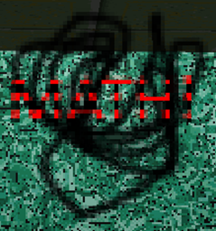

Notebooks are the main objective item in "Marcello's Fun House"(/"MFH").
Aliases
Notebook, book, MATH!, Mathbook, NB.
Appearance
It appears as some black scribbles with red and black text on top that reads "MATH!".
Gallery

Trivia
- The Player seemingly needs them for an unknown reason.
- Marcello becomes mad when both Notebooks are collected for an unknown reason.
- Despite being called "Notebooks" they look nothing like a notebook.
- There are only two of them in Marcello's "Fun"house.
Return to Main Page